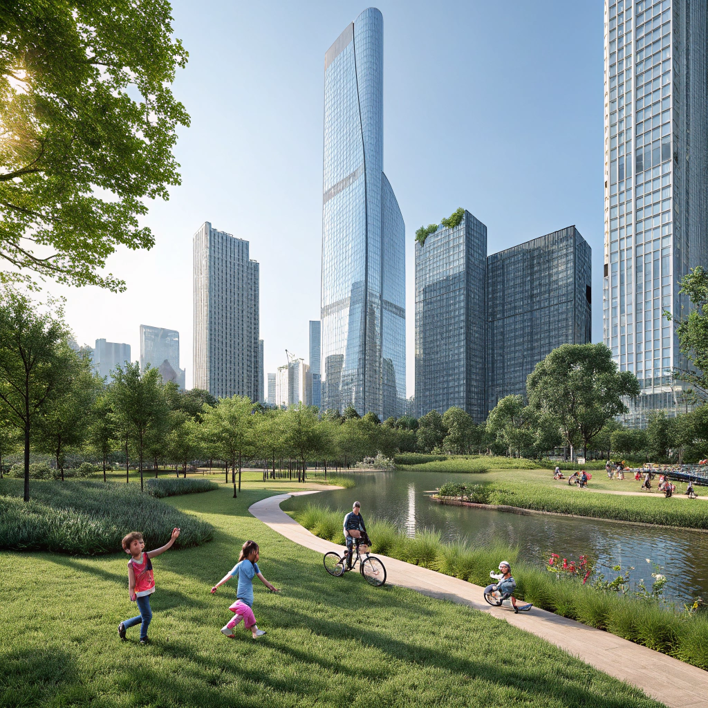

Şehirlerde Yeşil Alanların Önemi: Modern Yaşamın Nefes Alanları
03 Mayıs 2025 6 dakika okuma
Modern şehir yaşamında yeşil alanlar, beton yığınları arasında kaybolan insanların doğayla yeniden bağ kurabilmesi için birer yaşam kaynağı haline geldi. Artan nüfus ve kontrolsüz yapılaşma, şehir merkezlerinde nefes alabileceğimiz alanları giderek azaltırken, yeşil alanların önemi de katlanarak artıyor.
Dünya Sağlık Örgütü'ne göre, sağlıklı bir kent yaşamı için kişi başına en az 9 m² yeşil alan düşmesi gerekiyor. Ancak birçok metropolde bu oran 2-3 m²'ye kadar düşebiliyor.
Yeşil Alanların Şehir Yaşamına Katkıları
Yeşil alanlar sadece estetik güzellik sağlamakla kalmaz, aynı zamanda şehir ekosisteminin sağlıklı işleyişi için kritik roller üstlenir:
Hava Kalitesini İyileştirir
Bitkiler karbondioksiti emer ve oksijen üreterek şehir havasını temizler. Özellikle trafiğin yoğun olduğu bölgelerde hava kirliliğini %60'a varan oranlarda azaltabilir.
Isı Adası Etkisini Azaltır
Beton ve asfalt yüzeyler ısıyı emerek şehirlerin daha sıcak olmasına neden olur. Yeşil alanlar bu etkiyi dengeleyerek yaz aylarında şehir sıcaklığını 2-8°C düşürebilir.
Ruh Sağlığını Destekler
Yeşil alanlarda geçirilen zaman stresi azaltır, anksiyete ve depresyon belirtilerini hafifletir. Düzenli olarak parklarda vakit geçirenlerde mental sağlık sorunları %30 daha az görülür.
Sosyal Bağları Güçlendirir
Parklar ve bahçeler, farklı sosyal grupların bir araya geldiği, iletişim kurduğu ve toplumsal bağların güçlendiği ortak yaşam alanlarıdır.
Yeşil Şehirler İçin Neler Yapabiliriz?
Şehirlerimizi daha yaşanabilir kılmak için hem bireysel hem de toplumsal olarak atabileceğimiz adımlar var:
- Balkon ve teras bahçeciliği: Küçük alanlarda bile bitki yetiştirerek şehrin yeşil dokusuna katkı sağlayabiliriz.
- Yerel yönetimlerle işbirliği: Park ve yeşil alan projelerini desteklemek, bu alanların korunması için girişimlerde bulunmak.
- Dikey bahçeler: Bina cephelerinde uygulanan dikey bahçeler, şehirlerin yeşil alan kapasitesini artırmanın etkili yollarından biri.
- Topluluk bahçeleri: Mahalle sakinlerinin birlikte sebze ve çiçek yetiştirdiği ortak alanlar oluşturmak.
Dünyadan İyi Örnekler
Dünyanın önde gelen şehirleri, yeşil alanları şehir planlamasının merkezine koyarak örnek uygulamalar geliştiriyor:
Singapur: "Bahçe Şehir" vizyonuyla binaları yeşille bütünleştiriyor. Marina Bay Sands gibi ikonik yapıların üzerinde devasa bahçeler bulunuyor.
Kopenhag: Bisiklet yolları ve yeşil koridorlarla örülü bir şehir planlaması sunuyor. 2025 yılına kadar karbon nötr olmayı hedefliyor.
Viyana: Şehrin %50'sinden fazlası yeşil alanlardan oluşuyor. Her mahallede yürüme mesafesinde parklar bulunuyor.

Şehirlerimiz büyüdükçe, içindeki yeşil alanların değeri de artıyor. Betonlaşmanın getirdiği monotonluktan kurtulmak ve daha sağlıklı nesiller yetiştirmek için yeşil alanları korumalı ve çoğaltmalıyız. Unutmayalım ki, doğayla uyum içinde yaşayan şehirler sadece bugünümüzü değil, yarınlarımızı da güzelleştirecek.